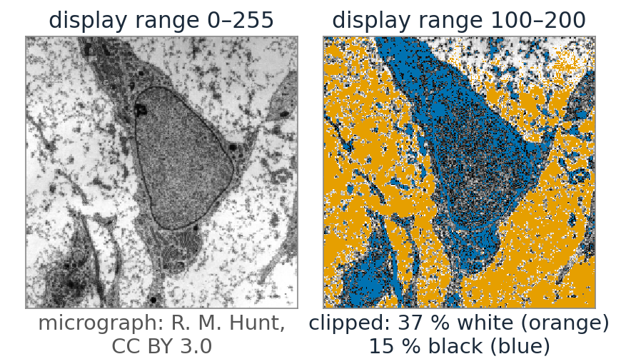
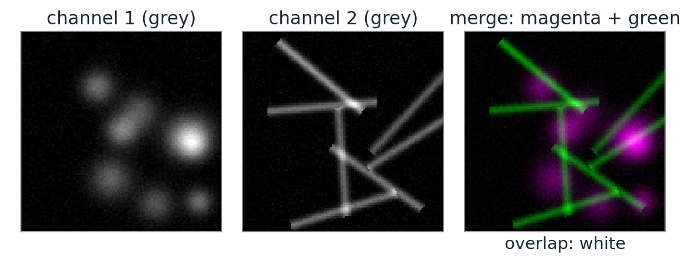
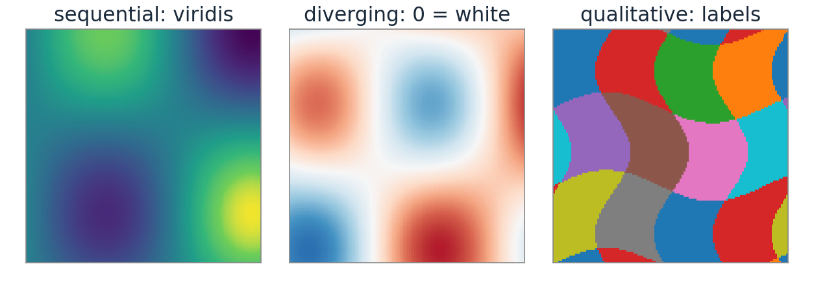
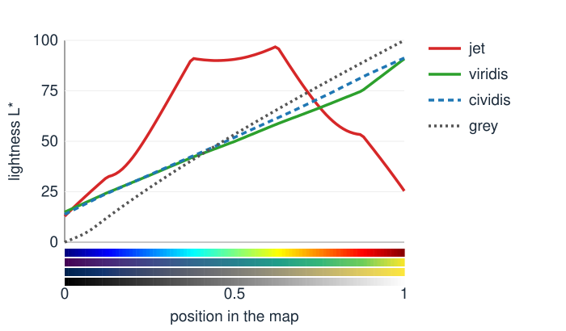
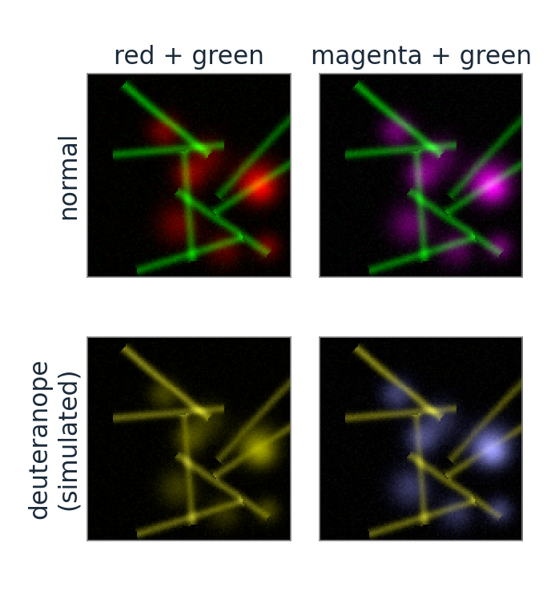
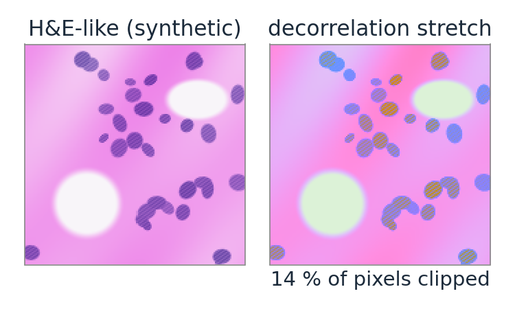

Colour for display: colour maps, merges and decorrelation
Image analysis
About this lecture
The last units read colour from images. Now the other direction: using colour to show data.
Pseudocolour and channel merges for fluorescence: a choice, not a fact.
Colour maps for a scalar image: sequential, diverging, qualitative. Lightness must change monotonically; the rainbow map invents edges.
Colour-blind viewers: a dichromat sees a projection of colour space; check figures with it.
Decorrelation stretch: PCA of the colour cloud brings out faint colour differences.
Slides titled The math give the formulas and proofs; the ideas are complete without them.
Displaying a grey image is already a choice
Recall (the bit-depth day): a lookup table maps each data value to a screen colour, after a display range (window/level).
The display range sets which values are black and white; values outside are clipped. Never let a display setting silently clip data that you measure.
A colour map is a lookup table with colours instead of greys: data value → position t \in [0, 1] → colour.
The data do not change; only how they look. But how they look decides what people see in them.

Fluorescence: channels are grey images
A fluorescence image has one grey image per filter set (per dye). Colour is added for display:

Pseudocolour: each channel through its own ramp (black → green, black → magenta, …).
Merge: add the coloured channels. Where both are present the colours mix (green + magenta = white; red + green = yellow).
The colour of a channel says nothing about the dye’s emission colour unless you choose it to.
Red/green merges are invisible to about 8 % of men (red–green colour blindness): red, green and their mixture become similar yellows. Use magenta/green (or cyan/magenta/yellow) and also show the channels separately, in grey.
Colour maps for scalar data
data
map
example
sequential (low → high)
lightness increases steadily
viridis, cividis, magma, grey
diverging (signed, around a centre)
lightest (or neutral) at the centre, two hues outwards
blue–white–red
qualitative (labels, classes)
distinct hues, no order
the label palette
The eye reads lightness as “how much”. A good sequential map has monotone lightness and roughly equal visible steps.
A diverging map puts its centre at the meaningful value (zero), so the display range must be symmetric around it.

Lightness must be monotone

Jet (the classic rainbow) goes dark blue → bright cyan/yellow → dark red: its lightness rises to L^* = 97 at t = 0.62 and falls to 25.
Bands of fast lightness change look like edges that are not in the data; flat stretches hide real structure.
High values (dark red) look darker than middle values: the order is lost in greyscale or for colour-blind viewers.
Viridis and cividis rise steadily (from about 14 to 91).
The math: what makes a map perceptually uniform
A colour map is a curve \mathbf c(t) in Lab, t \in [0, 1]. Perceived contrast between neighbouring data values is about
\Delta E \approx \left\|\frac{d\mathbf c}{dt}\right\| \Delta t .
Uniform: \|\mathbf c'(t)\| constant, so equal data steps give equal visible steps (arc length proportional to t).
Ordered: L^*(t) strictly monotone, so “more” always looks lighter (or always darker), also without hue.
Jet: L^{*\prime}(t) changes sign twice, and \|\mathbf c'\| varies strongly: false edges where it is large, flat zones where it is small. A map built by interpolating in Lab between anchors with increasing L^* (as the course’s maps are) is ordered by construction.
Try it: colour maps
Colour-blind viewers
About 8 % of men and 0.5 % of women have a red–green deficiency; most common is a weak or missing M (deutan) or L (protan) cone.
A dichromat has two cone types: two numbers per colour instead of three. Colours that differ only in the missing cone’s response look the same.
For a deuteranope, red and green both look like yellows of different lightness; for the rarer tritanope (no S cones) blue and green merge.
Check figures by simulating: the simulation is one 3 \times 3 matrix in linear RGB. Use maps whose order is carried by lightness (viridis, cividis) and magenta/green rather than red/green.

The math: a dichromat is a projection
In LMS a deuteranope does not have M. Replace it by a combination of the other two that keeps two anchor colours unchanged (white, and blue), i.e. M' = aL + bS with a, b from two equations:
D = \begin{pmatrix} 1 & 0 & 0 \\ a & 0 & b \\ 0 & 0 & 1 \end{pmatrix}, \qquad \text{in linear RGB: } S_\text{deutan} = T^{-1} D\, T,
with T = linear RGB → LMS.
D has rank 2 and D^2 = D: a projection onto a plane. Its null space is the direction (0, 1, 0) in LMS: changes of M alone are invisible.
Two colours look the same to the dichromat iff their difference lies in that null space, as in the metamers of the first unit.
(Brettel, Viénot and Mollon used two half-planes instead of one plane; a single matrix is the common simplification.)
Decorrelation stretch
Recall PCA (day 1): the principal axes of a point cloud are the eigenvectors of its covariance matrix.
In most images R, G and B are strongly correlated: the colour cloud is a cigar along the grey axis. Brightness varies a lot, colour little.
Decorrelation stretch: rotate the cloud to its principal axes, equalise the variances, rotate back. The thin directions (colour differences) are stretched, the long one (brightness) compressed.
Faint colour differences become visible: faded stains, rock art, remote sensing. Colours become false; the stretch is for seeing, not for measuring.
PC1 alone is a data-driven greyscale: the direction in which this image varies most.

The math: decorrelation stretch
Colour vectors \mathbf x_i (encoded RGB), mean \boldsymbol\mu, covariance S = U\Lambda U^\top with eigenvalues \lambda_1 \ge \lambda_2 \ge \lambda_3.
The new covariance is U\operatorname{diag}(\bar\sigma^2/\lambda_k)\Lambda U^\top = \bar\sigma^2 I: uncorrelated channels with equal variance, and the same total variance \operatorname{tr} S.
A tiny \lambda_3 means a huge gain \bar\sigma/\sqrt{\lambda_3}: noise along that axis is amplified as much. Values outside [0, 1] are clipped.
A fraction t \in [0, 1] of the stretch uses factors (\bar\sigma/\sqrt{\lambda_k})^t.
Try it: PCA of the colour cloud
A checklist for colour in figures
Sequential data: a map with monotone lightness (viridis, cividis, magma); never jet for quantities.
Signed data: a diverging map, centred on zero with a symmetric range.
Labels: a qualitative palette; neighbouring labels must differ.
Merges: magenta/green (not red/green), plus the single channels in grey.
Always show a colour bar with the display range, and say if anything is clipped.
Check the figure in greyscale and with a dichromat simulation.
Summary
Showing data in colour is a lookup table: display range + map. It changes what viewers see, not the data.
Sequential maps need monotone lightness; the rainbow map invents edges and loses the order. Diverging maps need a centred, symmetric range; qualitative palettes are for labels.
A dichromat sees a rank-2 projection of colour; simulate it to check figures; avoid red/green merges.
Decorrelation stretch = PCA of the colour cloud, variances equalised: faint colour differences become visible (false colours, for looking only).